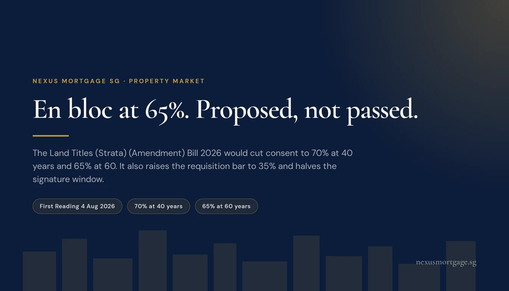
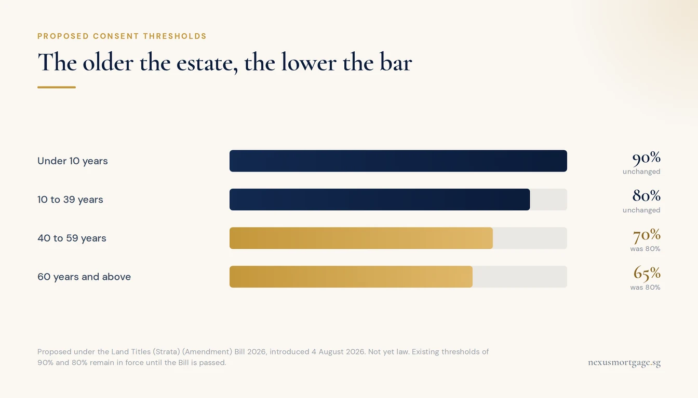
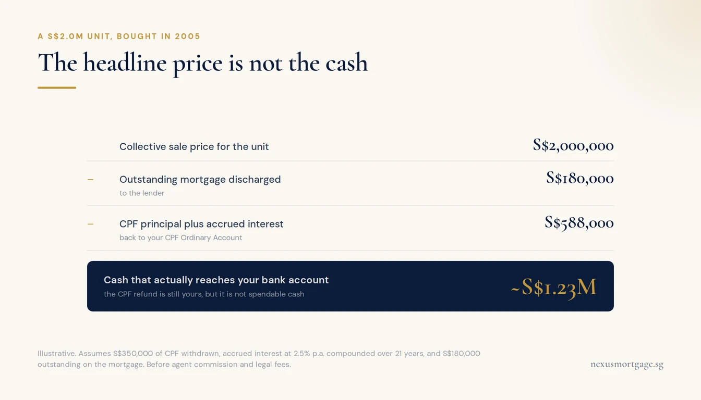

En Bloc at 65%: What the 2026 Bill Proposes, and What It Does to Your Money

The Land Titles (Strata) (Amendment) Bill 2026 had its First Reading on 4 August 2026. It is not law yet. It proposes cutting collective sale consent to 70% for developments aged 40 to 59 and 65% for those aged 60 and above, leaving newer stock at 90% and 80%. It also tightens three things: the requisition threshold to start a sale rises to 35%, the signature window halves to 6 months, and the cooling-off after a failed attempt extends to 3 years. If your development is in scope, the questions that decide your outcome are the CPF refund, the SSD position and the ABSD clock on your replacement home.
The Proposed Thresholds

Newer stock is untouched. The change targets 1970s and 1980s estates.
The Ministry of Law introduced the Bill on 4 August 2026, framing it as support for "the renewal of ageing developments" and better use of land. It has passed First Reading only. Second reading and debate come at a later sitting, and nothing below is in force today.
| Age of development | Consent required today | Proposed |
|---|---|---|
| Under 10 years | 90% | 90% (unchanged) |
| 10 to 39 years | 80% | 80% (unchanged) |
| 40 to 59 years | 80% | 70% |
| 60 years and above | 80% | 65% |
The targeting is deliberate. A development completed in the 1970s or early 1980s is now well past the point where retrofitting lifts, plumbing and structure is economic, and an 80% bar in an estate with a large cohort of retired owners who do not want to move has been effectively unreachable. Dropping to 65% changes the arithmetic for exactly that population.
What it does not change is the commercial reality. A collective sale still requires a developer willing to pay a price that clears the reserve, and that price still has to survive land betterment charges and a lease top-up. Consent is the gate. It has never been the constraint that mattered most.
The Three Changes That Cut the Other Way
Almost every headline has run with the 65% figure alone. The Bill also contains three provisions that make collective sales harder, and for a minority owner they matter more than the threshold does.
| Provision | Today | Proposed | Effect |
|---|---|---|---|
| Requisition to convene an EGM | 20 to 25% of owners | 35% | Harder to start a process at all |
| Signature-gathering window | 12 months | 6 months | A stalling campaign runs out of road faster |
| Cooling-off after a failed sale | 2 years | 3 years | No immediate second bite |
Read together, the shape of the policy is clear enough: make a sale that has genuine majority support easier to finish, and make the serial attempts that exhaust an estate harder to launch. If you have lived through a development where a committee reconvenes every twenty-four months, the third row is the one you will care about.
The Quiet Extension to Non-Strata Developments
The Bill also extends the collective sale framework to certain non-strata-titled private residential developments, where owners hold long leases over their units but do not own the underlying land. Neptune Court in Marine Parade is the example most often cited.
These estates have historically sat outside the collective sale regime altogether, which left them with no practical route to redevelopment no matter how strong the owner consensus. If you own in one, this provision is the part of the Bill that concerns you, not the headline percentage.
What Actually Reaches Your Bank Account

Owners routinely budget the CPF refund as if it were cash. It is not.
Owners consistently overestimate this, and the gap between the headline number and the cash figure is where the stress lands.
Three things come out before you see a dollar: the outstanding mortgage is discharged, your CPF is refunded with accrued interest, and the transaction costs are paid. Take a unit selling at S$2.0 million, bought in 2005, with S$180,000 still outstanding on the loan and S$350,000 of CPF withdrawn along the way.
| Line | Amount | Where it goes |
|---|---|---|
| Collective sale price for the unit | S$2,000,000 | |
| Outstanding mortgage discharged | (S$180,000) | To the lender |
| CPF principal refunded | (S$350,000) | To your CPF OA |
| CPF accrued interest at 2.5% over 21 years | (S$238,000) | To your CPF OA |
| Cash to your bank account | ~S$1,232,000 | Before agent and legal fees |
| Plus restored CPF Ordinary Account | ~S$588,000 | Usable for the next property |
The CPF portion is not lost. It sits in your OA and can go straight into the replacement home. But it is not spendable cash, and an owner who has mentally budgeted S$1.8 million of liquidity against a S$2.0 million sale is going to be S$588,000 short at exactly the wrong moment. Our guide to CPF accrued interest on a property sale sets out the formula and why the figure compounds so hard on a long hold.
The Seller's Stamp Duty Trap
This one is genuinely counterintuitive, and it is worth understanding precisely.
Where a collective sale is effected by order of the Strata Titles Board or the High Court, Seller's Stamp Duty is waived, no matter how long you have held your unit. That covers the ordinary case, where some owners dissent and the sale has to be approved.
Where the sale completes without such an order, typically because every single owner consented and no approval was needed, SSD applies exactly as it would on any other disposal. Since the July 2025 reset that means a four-year holding window at 16%, 12%, 8% and 4%, and it is assessed on your acquisition date, not the development's.
So an owner who bought a unit in an ageing condo eighteen months ago, precisely because they were betting on an en bloc, can find themselves facing 12% of the sale price in SSD on the very outcome they were hoping for. On a S$2 million unit that is S$240,000. Liability follows the transaction, so dissenting owners get no relief either.
If you acquired within the last four years, put the question to a conveyancing lawyer before you sign the collective sale agreement, not after.
Financing the Replacement Home
The financing problem in a collective sale is almost never the money. It is the sequencing.
You do not control the completion date. It is set by the process, and it can move. Meanwhile you need somewhere to live and, in a rising market, every month you wait is a month of price movement against you. That pushes owners into buying before the sale completes, and that is where the costs appear.
- ABSD on the second property. Buy before your sale completes and you own two residential properties. A Singapore Citizen pays 20% ABSD on the second. On a S$2.2 million replacement that is S$440,000 payable upfront.
- The remission, and its clock. A married couple with at least one Singapore Citizen can claim a refund of that ABSD on a replacement matrimonial home, but must sell the first within 6 months of the purchase where the property is completed. When your sale date sits with a Strata Titles Board timetable, betting on a 6-month window is a real risk. See the ABSD second-property guide for the full conditions.
- LTV drops to 45%. While you hold two properties with an outstanding loan on the first, the second purchase is capped at 45% loan-to-value, not 75%. That is a much larger cash requirement than most owners plan for. See the second-property LTV ladder.
- Bridging the gap. A bridging loan covers the window between committing to the replacement and receiving your proceeds. It is short-tenure, interest-only in most structures, and priced well above a term mortgage, but it is usually far cheaper than the alternative of buying at the wrong point in the cycle.
The order of operations here is worth more than the rate you eventually get. Get an In-Principle Approval for the replacement purchase early, model both sequences (sell-then-buy and buy-then-sell) with the ABSD and LTV consequences priced in, and decide which one you are running before the collective sale agreement is signed. We do that modelling at no cost, and it is a lot cheaper than a S$440,000 surprise.
If You Are Buying Into Ageing Stock
Every time a threshold moves, a wave of buyers goes shopping for the oldest leasehold condo they can find. Be careful.
A lower consent threshold does raise the probability of a sale. It does not change whether a developer will pay a price that clears the reserve, and it does not change the redevelopment economics after land betterment charges. Plenty of estates will now clear 65% consent and still fail to find a buyer at a number the owners will accept.
In the meantime you own an ageing leasehold asset. Lenders shorten the maximum tenure against the remaining lease, which raises your monthly instalment and, through the MAS 4% stress test, cuts the quantum you can borrow. CPF usage rules also tighten as the remaining lease shortens relative to the youngest buyer's age. Both effects bite hardest on precisely the 60-year-old developments the Bill targets.
Buy the property on what it is worth as a home today. If an en bloc arrives, treat it as a windfall on an option you were never charged a premium for. Do not pay a premium for it in advance.
This article is general information for Singapore property owners. It is not legal, tax or financial advice. The Land Titles (Strata) (Amendment) Bill 2026 passed First Reading on 4 August 2026 and had not been debated or passed at the time of writing; the thresholds described as proposed are not in force. Collective sale procedure is administered under the Land Titles (Strata) Act and the Strata Titles Board; stamp duties are administered by IRAS; CPF refund rules by the CPF Board; LTV, TDSR and MSR by MAS. Worked figures are illustrative and are not an offer of credit. Take your own SSD, ABSD and conveyancing position to a qualified lawyer before signing a collective sale agreement. Current as at 2 September 2026. Sources: Ministry of Law, IRAS: Seller's Stamp Duty, IRAS: Additional Buyer's Stamp Duty, CPF: Home Ownership, MAS Notice 645 (TDSR).

About the author — Dan Ler has advised on Singapore home loans since 2017 at Nexus Mortgage SG, an independent brokerage comparing 16+ MAS-regulated lenders. Nexus has facilitated 500+ home loans across HDB, EC, private condo and landed property segments. Banks pay Nexus on disbursement, so there is no cost to the borrower.